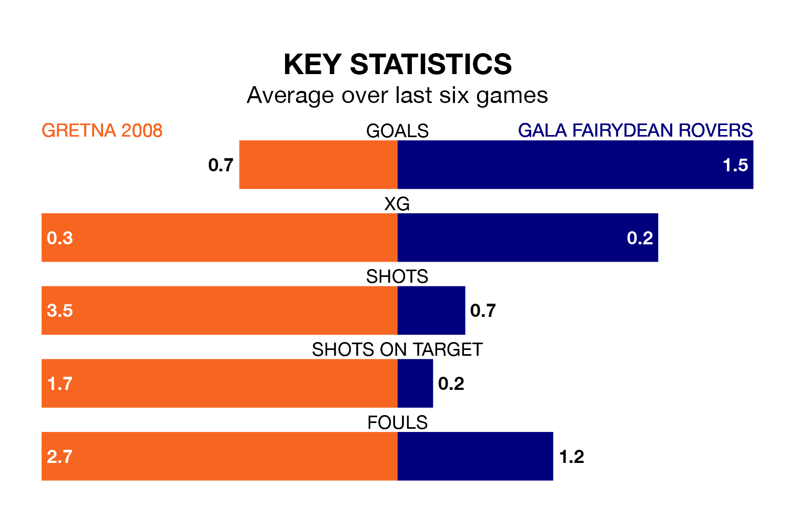

Struggling Gretna 2008 face Gala Fairydean Rovers at Raydale Park on Saturday looking to build on a win in their last league outing.
After securing all three points with a 0-3 victory over Hearts U21 on March 23, Gretna 2008 sit 17th in the Lowland Football League.
They travel to play a Gala Fairydean side 16th in the standings, who also won their last match, 1-0 against Stirling University, on March 16.
Gretna 2008 are in awful form in the Lowland Football League, with no wins and six losses from their last six games.
With two wins and four losses over that period, Gala Fairydean's form is much better – they have taken six points from 18, compared to the hosts' zero.
In the last 10 years, Gretna 2008 and Gala Fairydean have played each other on 15 occasions. Gretna 2008 won four of them, Gala Fairydean nine, and they drew twice.
On average, Gretna 2008 scored 1.5 goals and Gala Fairydean 2.2 in those matches.
Their last meeting was on September 30, when Gala Fairydean won 4-1 at home.
With 20 goals in 30 games so far this season, Gretna 2008 are the league's second-lowest scorers with 0.7 goals per game. And they are conceding more than average, letting in 102 goals at a rate of 3.4 per game.
Rovers are also below average scorers, with 1.4 goals per game, compared to a league average of 1.6. They have conceded 2.6 goals per game.
Updated: 10:31 (UTC), 31/03/24